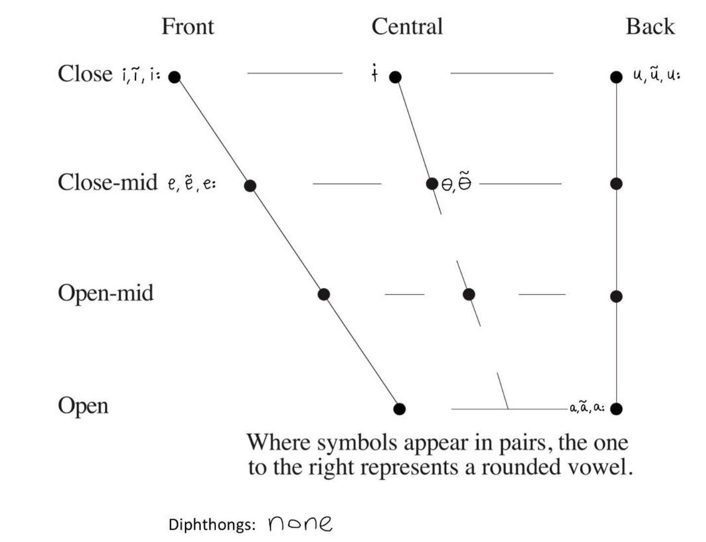

This language report focuses on Tariana, a dialect spoken by the "lowest-ranking" dialect of Wamiaɾikune, belonging to the Arawak language family. Originally spoken by over 1500 people along the Vaupés river and its tributaries, Tariana is now actively spoken by only about 100 people in the multilingual area of the Vaupés basin. Alexandra Y. Aikhenvald authored the grammar of Tariana, starting her data collection in 1991 and continuing to work with most speakers of the Wamiaɾikune dialect. Her work has resulted in a bilingual Tariana-Portuguese dictionary. The grammar includes an analysis of Tariana language, covering phonology, morphology, syntax, discourse organization, and semantics, accompanied by detailed examples from texts and conversations.
According to the Ethnologue, Tariana is classified as level 8a (Moribund), indicating that it is endangered, with only individuals in the grandparent generation or older actively using it. Several factors contribute to Tariana's endangerment. European colonization imposed Christianity on the Tariana people, eroding indigenous culture and the active use of Tariana. The Rubber Boom in the late 19th century displaced local communities and brought outsiders interested in rubber trading, further threatening the language's continuity. Additionally, the spread of Tucano as a lingua franca in the early 20th century diminished the everyday use of Tariana.
Consonants and Vowels: Tariana has 38 phonemes, including 23 consonants and 15 vowels as shown below.
Tariana falls slightly above the average total number of phonemes in languages. The consonant inventory shows articulation places falling under labial, coronal, and dorsal categories. Tariana's consonant inventory does not have inherently complex consonants. The manners of articulation reveal voiced nasals, tap, and approximants. It includes one affricate, aligning with the implicational universal. Tariana employs voiced a nd voiceless phonation along the continuum. The vowel inventory contrasts vowels based on height, closeness, and rounding, with the presence of nasalized vowels.
In summary, this report provides a comprehensive overview of the Tariana language, emphasizing its linguistic characteristics and endangered status. Documentation and preservation efforts are crucial. The analysis contributes to understanding linguistic diversity and the challenges faced by endangered languages in the modern world.